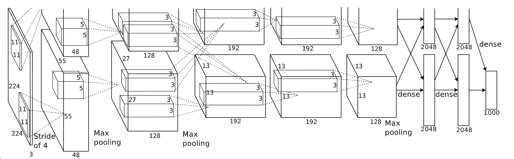

ImageNet Classification with Deep Convolutional Neural Networks
题目：使用深度卷积神经网络对ImageNet进行分类
0 摘要
作者训练了一个大型深度卷积神经网络来对ImageNet进行分类，效果比之前所有的效果都好。它包含5个卷积层，中间还有池化层，最后三个全连接层(softmax)，输出1000类的分类结果。为了训练更快，使用了非饱和神经元（其实是非饱和激活函数，也就是relu）和一个性能很好的gpu（现在已经不太行，当时确实不错）。为了减少全连接层的过拟合，使用了一种“droupout”的正则化方法，效果不错。这个模型取得了2012年某个比赛第一。
1 介绍
第一段，踩了一脚机器学习的方法，说他们数据集小，只能用来解决简单的识别任务。并且引出了本文用到的数据集：ImageNet。
第二段，说ImageNet很大很复杂，所以作者需要大量的先验知识；接着，cnns要比前向神经网络好，有更少的连接和参数，很容易被训练。
第三段，说作者模型的缺点，在高分辨率图像训练很花钱很花时间。接着，gpu加上卷积优化能极大改善这种情况，使得可以在ImageNet上进行比较好的训练，也不会出现过拟合。
第四段，说是根据2010和2012年ImageNet的子集进行训练的，并且是迄今为止最大的卷积神经网络，取得了最佳结果。作者编写了适用于GPU的算法，还在网络中加入了不同寻常的特征。作者使用了几种技术来防止过拟合。并且提到神经网络的深度很重要，去掉任何一个卷积层（卷积层通常参数占比很低，大约1%）都会导致性能下降很多。
第五段，说了训练限制，很大程度上是被时间和GPU的能力所限制，并且更好地GPU肯定能训练得更快。
2 数据集
介绍了以下ImageNet，训练的数据只是ImageNet的子集，大约1000个类别，每个类别1000类。训练的输入是把图集中不同的分辨率调到一致的输入：256*256，而且直接在原始RGB图像上做，end2end的感觉。
3 架构
本节中作者介绍的作用的重要性由大到小。
3.1 relu正则化（激活函数）
非饱和函数，比tanh和sigmoid要快好几倍，而且还能防止一定的过拟合。
3.2 在多GPU上训练
采用了两个GPU进行并行化操作，将一半的kernel放在一个上。
3.3 局部响应归一化
局部归一化有助于泛化效果，能提高一定的测试集准确率。
3.4 重叠池化
有助于降低过拟合，提示一部分精度。重叠池化其实就是步幅小于核边长。
3.5 整体架构
因为使用了两个GPU，所以一个运行上面的，另一个运行下面的。
一共8个层，5个卷积层，3个全连接层，其中最后的用到了softmax层。这里面输入是224*224，之前提到是256*256，原因是提前做了裁剪，进行了数据增强。

4 减少过拟合
网络中有6千万个参数，所以我们采用两种方法进行降低过拟合。
4.1 数据增强
第一种包括图像平移和水平反射，训练集规模提升了2048倍，对一个图片进行五个斑块的裁剪和其水平反射，一共有十个，最后对10个斑块的预测进行平均化。第二种就是更改训练中RGB通道的强度，使用了PCA，进行了一些变换，当照明强度和颜色的变化时，目标身份是不变的。
为什么要使用PCA主成分分析？？ 因为要保持原图像的相对色差、主要色系和轮廓，我们不能在增强完数据之后让图像本身表达的事物发生改变。 我们是对三通道进行PCA的，协方差矩阵的特征向量表达的是R、G、B三个channel之间的相对关系，叶子的图片，绿色占主导地位，色差主要是由绿色体现出来，绿色的色系相对丰富，所以主成分是偏绿色系的。
4.2 dropout
结合多个模型的训练结果可以减少误差，但是对大模型不适用，训练成本太高了。dropout层以0.5的概率随机剔除一些神经元，不参与前向和后向传播。也增加了速度，但是由于随机丢弃，使得收敛慢了一倍。它使用在前两个全连接层中。作者认为参数共享可以实现每次训练得到”不一样的模型“，从而得到一个融合模型。但实际上应该不是这样。使用了共享参数，共享参数的做法意味着，在第二个卷积层和第四个卷积层之间使用相同的权重参数。这样做的好处是可以减少模型的参数量，加快模型的训练速度，并且有助于防止过拟合现象。
5 学习中的细节
使用了随机梯度下降，批次大小128，动量0.9，权重衰减0.0005。权重衰减也可以减少过拟合。
以标准差事0.01的零均值高斯分布初始化每一层的权重，2，4，5卷积层和全连接层偏置是1，其余层偏置是0。这种输入有助于ReLU加速早期学习阶段。
学习率，当验证错误率随着当前学习率提高而停止时，把学习率除以10。初始的学习率是0.01，并且在终止前减少了三次。
训练了90轮。
在每次权重更新时，动量算法会考虑当前的梯度与之前的梯度更新方向的加权平均。这样可以使得权重更新在相同方向上具有更大的幅度，并且在更新方向改变时能够保持一定的继续前进的势头。这样的更新策略有助于加速收敛过程，尤其在存在平坦区域或者峡谷的情况下。
6 结果
本文描述的CNN实现了18.2%的前5名错误率。
6.1 定性评价
贴出来了每个图片下对应的五个最可能类型的类别及其概率。
还贴出来了最后全连接层欧氏距离差距不大的图片。
7 讨论
指出卷积层的重要性，不能随便拿掉一个，即强调神经网络的深度的重要性。期待训练更大的模型。
8 总体评价
- 介绍部分（1）感觉作者太狂了，直接就说之前的方法不行，自己的方法牛逼，感觉不是个很好的论文书写，除非你真的很牛逼，像这篇文章的作者一样。
- 数据集部分（2）最后提到直接使用原始的rgb（raw RGB）数据进行训练，得到结果，其实是个很了不起的事，端到端还是一个很不错的卖点。
- 架构部分（3.3局部响应归一化）这个没讲明白用这个的原因，只是说用这个不错，能降低过拟合，其实之后的工作也很少用这个方法。
- 架构部分（3.5整体架构）切的不太合理，假如有多个GPU怎么办，通用性差。
- 数据集部分（2），说了是256*256作为输入，后面提架构的时候应该说一下，增强的事，因为此时输入变成了224*224，虽然后面解释了。
- 减少过拟合（4.2），dropout就是正则项，而不是作者提到的融合模型。